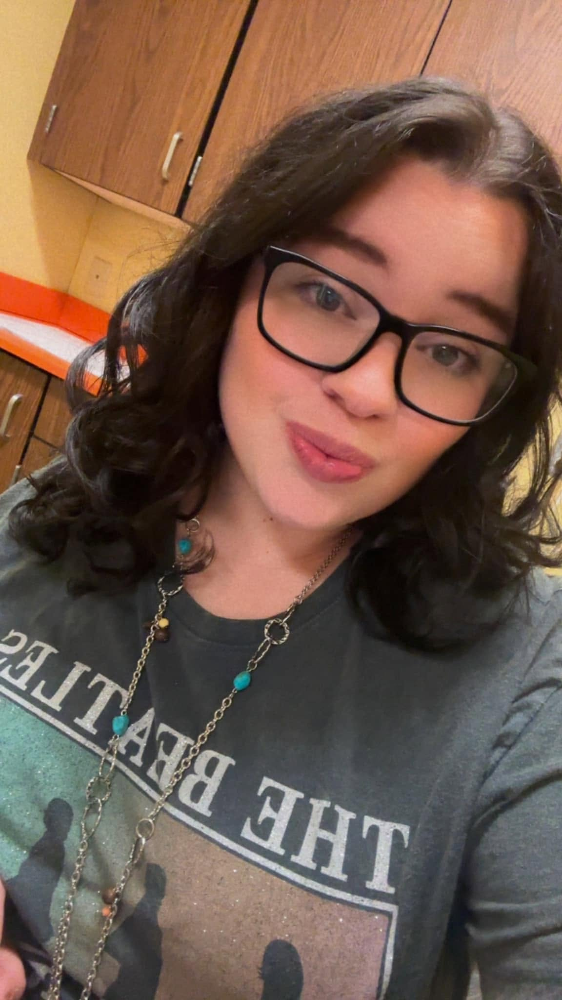

Welcome to my personal introduction page!
I am majoring in Computer Science and have a strong interest in web development and software engineering. I currently work at a high school and am hoping to gain more experience in the field of technology and programming. I am working towards getting my bachelor's degree and becoming a high school mathematics teacher. I enjoy working with kids and look forward to helping them learn and grow in their understanding of mathematics. I plan to take the necessary steps to become a certified teacher and make a positive impact in the lives of my students. I am passionate about education and believe that every student has the potential to succeed with the right guidance and support. I am excited to continue my journey in the field of education and technology, and I look forward to the opportunities that lie ahead.
In this class, I hope to further develop my skills in web development and software engineering, and to gain a deeper understanding of the principles and practices that drive successful technology projects. I also hope to use the knowledge and skills I gain to contribute to meaningful projects and make a positive impact in the field of technology. With this course I believe it will help me be able to assist students who are interested in pursuing careers in technology. I hope to be able to use the skills I learn in this class to be able to help students in UIL competitions and other technology-related activities. I am excited to learn from my peers and instructors, and to collaborate on projects that will challenge me to think critically and creatively. Overall, I am looking forward to a rewarding and enriching experience in this class, and I am eager to see where this journey will take me in my future career as a high school mathematics teacher and technology enthusiast.